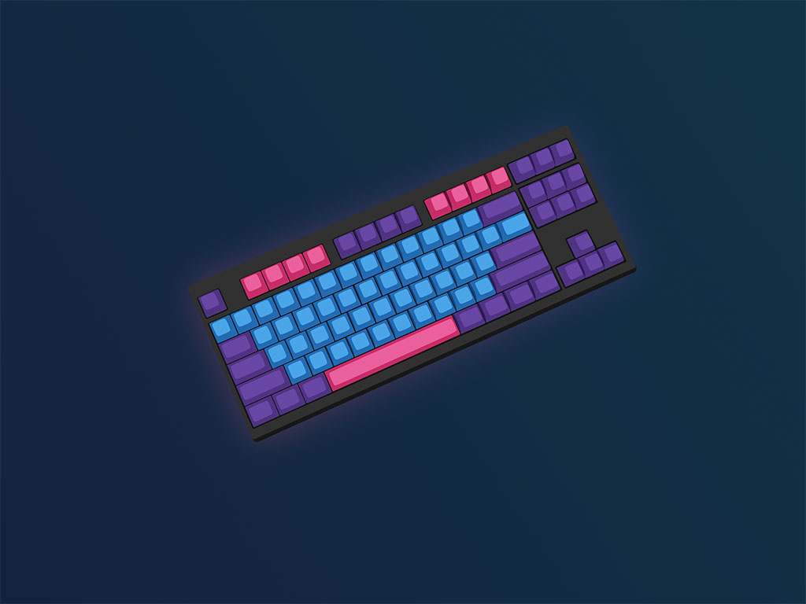
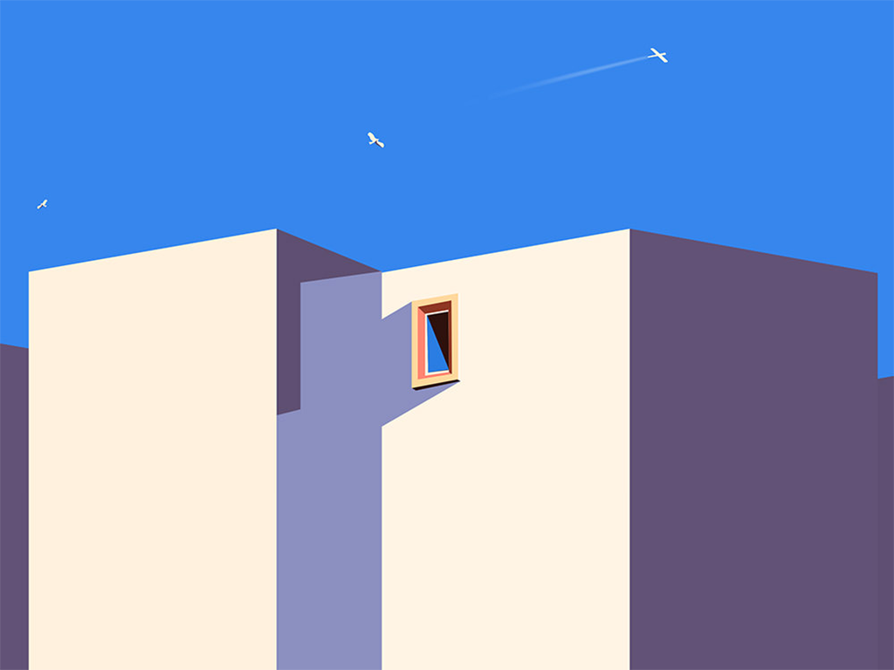

7 August 2023
Blog One
I'm excited to start a new learning journey as a Scrimba Bootcamp student! After several months of learning in the Frontend Developer Career Path.

27 July 2023
Blog Two
I'm excited to start a new learning journey as a Scrimba Bootcamp student! After several months of learning in the Frontend Developer Career Path.
10 July 2023
Blog Three
I'm excited to start a new learning journey as a Scrimba Bootcamp student! After several months of learning in the Frontend Developer Career Path.